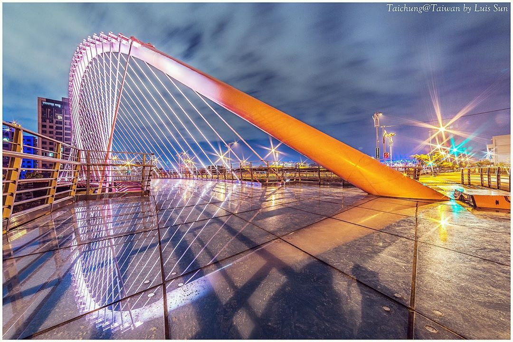
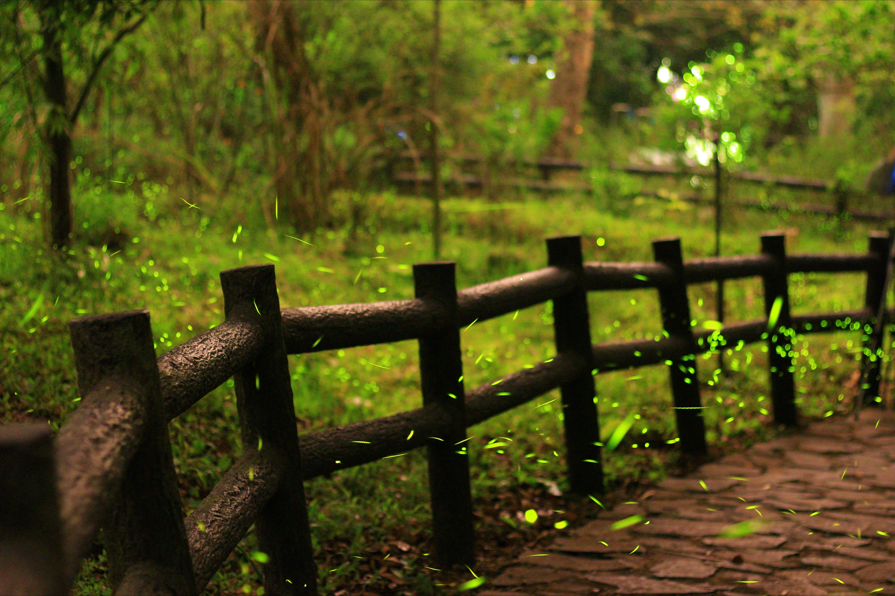

自民國88年921地震後，臺中大坑中正露營區旁的溪谷地沿岸崩塌，中央補助經費重新修建步道及涼亭等公共設施。次年開始進行棲地營造，成立大坑蝴蝶及螢火蟲復育區(現今大坑生態園區)，位於大坑中正露營區與大坑四號步道入口之間。
園區適合體驗在地的自然環境及昆蟲植物，課程規劃也以大坑地區植物及昆蟲生態為主軸，隨季節發展不同主題。二、三月是春天的開花季，四月、五月黑翅蟬，六月獨角仙，七八月是蝴蝶翩翩飛舞的季節，秋天能認識不同植物的種子、冬天可以看到許多青斑蝶。